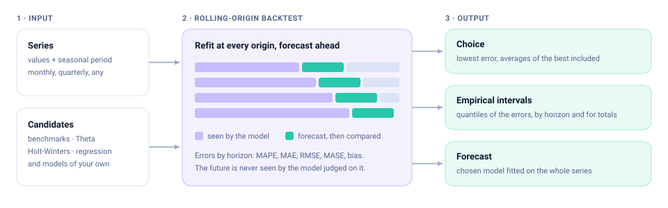

Forecasts chosen by what would have worked.
A forecasting module that replays the past before trusting a model: rolling-origin backtest, choice by out-of-sample error, and intervals taken from the errors actually observed. Pure Go, standard library only.
Built to be believed, not just to fit
A model that fits the past well can still forecast badly. Every choice here is made on forecasts the model gave without seeing the answer.
Rolling-origin backtest
Each model is refitted at every origin using only earlier data and forecasts 1 to h periods ahead. Errors are reported by horizon: MAPE, MAE, RMSE, MASE and bias.
Choice by out-of-sample error
The winner is whatever forecast best, the simple average of the best models included. No information criterion decides what you ship.
Empirical intervals
Intervals are quantiles of the errors seen in the backtest, horizon by horizon. No normality is assumed and none is needed.
Intervals for totals
The total of the next k periods gets its own interval, measured on totals. Adding up monthly limits would overstate the uncertainty of a year.
Pure Go
Standard library only: no cgo, nothing to link, nothing to audit but the module itself. It cross-compiles like any Go program.
Deterministic
The same series gives the same numbers, on one core or sixteen. Fitted parameters are exposed by name, ready for an audit trail.
Models
From the yardsticks every model must beat to the exponential smoothing family, seasonal ARIMA with automatic orders, Prophet with dated events, TBATS for several seasonal periods and Croston for intermittent demand. Models can be combined in an ensemble or run on a series decomposed by STL. Any of them can run on the log or another Box-Cox scale.
This is the Go edition of the Rust crate foresight. ARIMA is estimated by exact Gaussian maximum likelihood with the innovations algorithm; Prophet is fitted without Stan, its changepoints that do not matter coming out as exactly zero. A model of your own is one interface away: implement Model and it joins the backtest.
On real data
Monthly ICMS, the sales tax of the Brazilian state of Piauí, from public fiscal reports. The average of two seasonal ARIMA models, on the log and on the original scale, had a mean absolute percentage error of 3.4% over 36 origins and 12 horizons; the seasonal naive forecast had 11.5%.
ICMS revenue, Piauí: last four years and the next twelve months
BRL million per month. Forecast from data up to June 2026, with the 80% empirical interval.
Forecast as a table
| Month | Forecast | Lower (80%) | Upper (80%) |
|---|
Total of the next six months: BRL 5.02 billion, 80% interval 4.88 to 5.25 billion. Adding up the six monthly limits instead would give a wider and wrong interval.
Source: Siconfi/STN, RREO Anexo 03. The data is in testdata/ of the repository.
How it works
One pass over the past produces everything: the ranking, the choice and the intervals.

Describe the series
Values and seasonal period. Slices keep season and position.
Pick candidates
The built-in set, or your own list with your own names.
Replay the past
Origins, horizon and window are yours to set.
Read the report
Errors by horizon, the choice, forecasts and intervals.
Install & run
Get the module, describe the series, run the backtest. Go 1.22 or later; changes between versions in the changelog.
$ go get github.com/milkway/foresight-go// choose among the ready set of candidates
import foresight "github.com/milkway/foresight-go"
y := foresight.Monthly(values, 0)
report, err := foresight.DefaultBacktest().
Run(y, foresight.Defaults())
if err != nil {
log.Fatal(err)
}
best := report.Best()
for _, p := range best.Forecast {
i, _ := p.Interval(0.80)
fmt.Println(p.Horizon, p.Mean, i.Lower, i.Upper)
}
total, _ := best.Cumulative(6)// one model on its own
fit, err := foresight.Theta{}.Fit(
foresight.NonSeasonal(values))
next := fit.Forecast(3)
// your own settings and your own names
report, err := foresight.Backtest{
Origins: 24, Horizon: 6, Window: 60,
}.Run(y, []foresight.Candidate{
foresight.NewCandidate(foresight.SeasonalNaive{}).
Named("same_month", "Same month of last year"),
foresight.NewCandidate(foresight.LogLinear{}),
})Checked against Rust and R
The Go edition has to give the numbers of the Rust crate, which in turn is compared with the R package forecast 9.0.2 on public data. Both comparisons are part of the test suite.
| Against | What | Agreement |
|---|---|---|
| Rust crate | Backtest of four models on two public series: errors and bias by horizon, quantiles, forecasts, intervals and the choice | The same numbers (relative difference under 10⁻⁹) |
| Rust crate | Prophet, ARIMA, regression with ARIMA errors, ETS, automatic orders, tests of stationarity and seasonality | The same likelihood and the same models chosen; forecasts within the precision of the search |
| Rust crate | STL, MSTL, forecasts by decomposition, Croston, SBA and TSB, outliers and cleaning | The same numbers (under 10⁻⁸) |
| Rust crate | Ensembles, TBATS and the backtest of 18 candidates | The same structure and the same choice; forecasts within the precision of the search |
R, forecast | Seasonal naive, random walk with drift | Exact |
R, forecast | Theta | Forecasts within 0.1% |
CI on every platform
gofmt · go vet · tests on Linux, macOS and Windows, with Go 1.22 and the current release.
From the papers
Box & Jenkins, Brockwell & Davis, Hyndman & Khandakar, Taylor & Letham, Assimakopoulos & Nikolopoulos, Guerrero. R supplies reference numbers only.
MIT, nothing attached
With no dependencies there is no license to reconcile and no supply chain to watch.